Dock
Unten wird es leichter
Apps, Ordner und Papierkorb genau da, wo du sie willst. Fenster wählst du per Live-Vorschau.
Mehr erfahren →


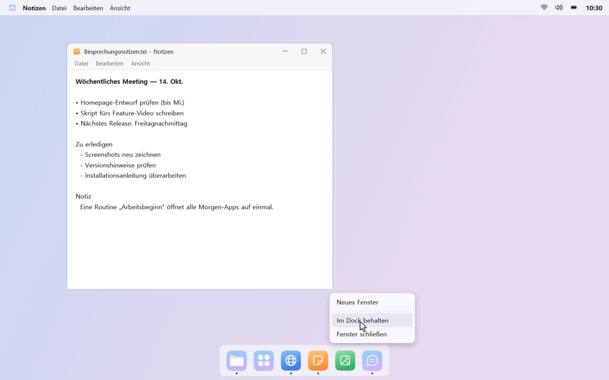
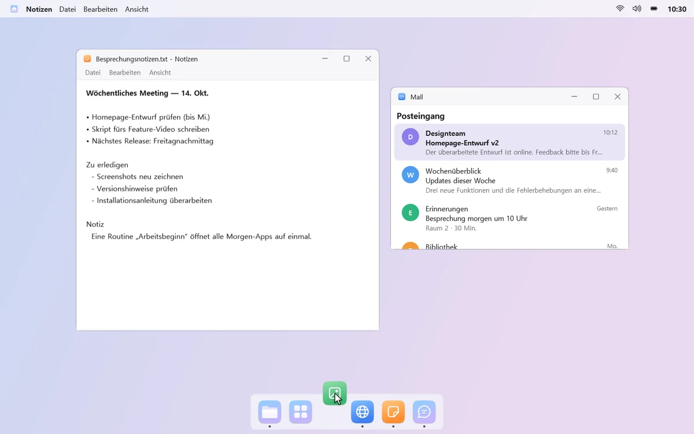
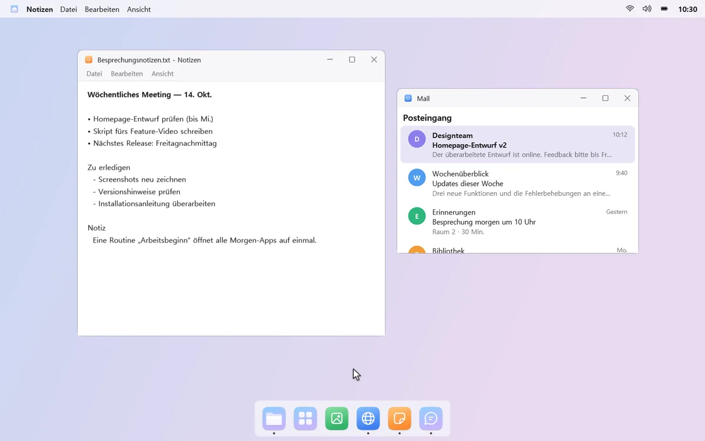
Unten ein Dock zum Starten und Wechseln von Apps, oben eine Menüleiste mit App-Menüs, Kontrollzentrum und Kalender. Apps, die du immer zusammen nutzt, öffnest du mit Routinen auf einen Klick.
15 Tage lang alle Funktionen kostenlos testen, dann einmal kaufen. Kein Abo, keine Werbung.
Windows 11 oder Windows 10 ab Version 2004 · x64-PCs

Lauter Symbole – und das eine, das du brauchst, fehlt trotzdem.
Lautstärke, Helligkeit und Kalender liegen jeweils woanders.
Mail, Chat und Dokumente einzeln öffnen und dann jedes Fenster an seinen Platz ziehen.
mongdock nimmt dir den Kleinkram ab.
Apps, Ordner und Papierkorb genau da, wo du sie willst. Fenster wählst du per Live-Vorschau.
Mehr erfahren →


App-Menüs, Ton und Helligkeit, Kalender, Benachrichtigungsbanner und Suche starten alle in einer Leiste.
Mehr erfahren →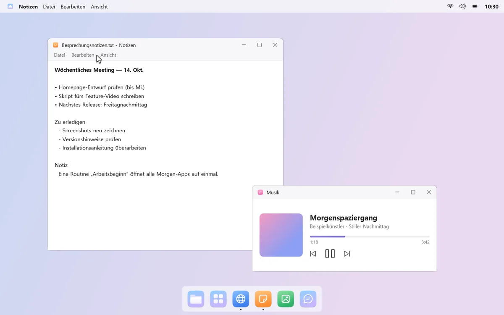
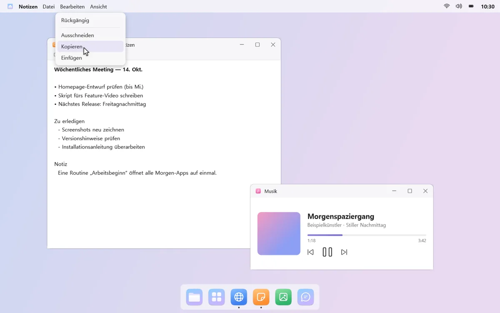
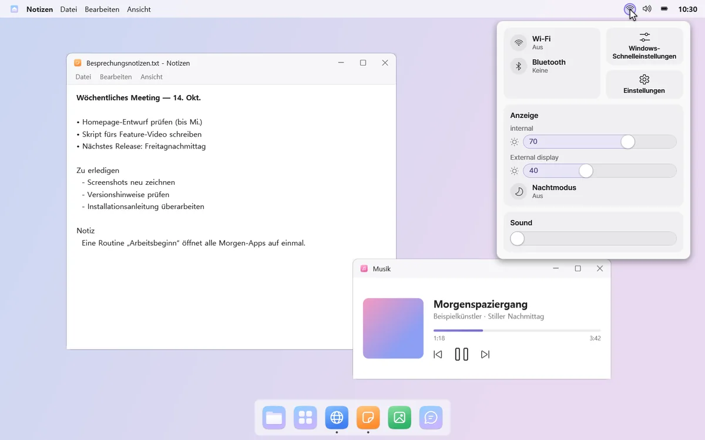
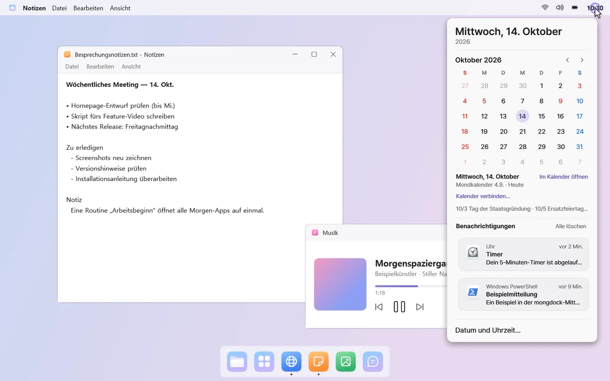
Favoriten, Ordner nur mit genutzten Apps und Aufräumen von Apps, die du nicht mehr öffnest – in einem Bereich.
Mehr erfahren →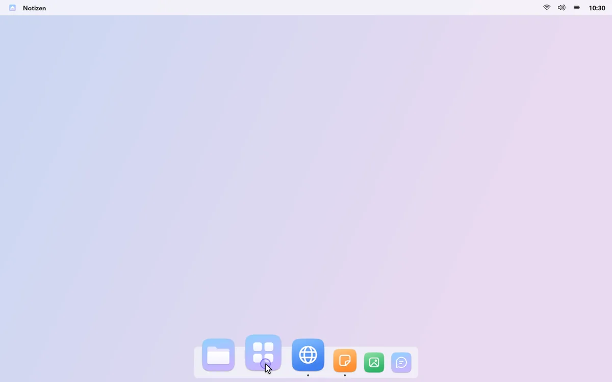
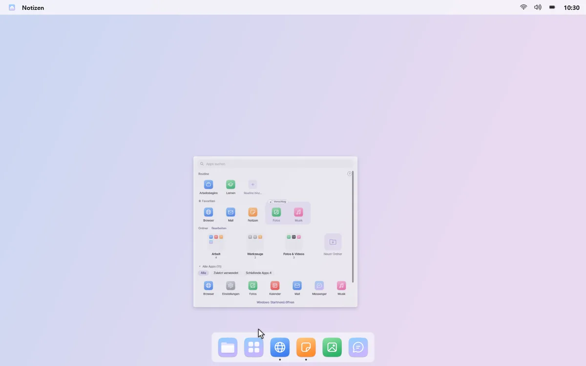
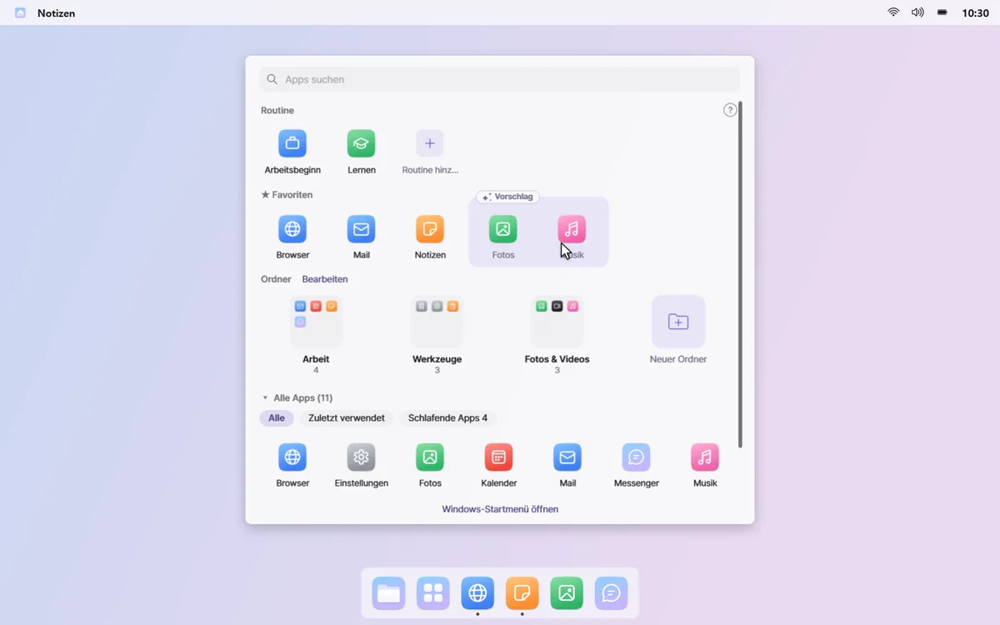
Bündle Apps, Links und Spiele. Sie öffnen sich zusammen auf einem neuen Desktop, jede an ihrem Platz, und schließen sich zusammen, wenn du fertig bist.
Mehr über Routinen →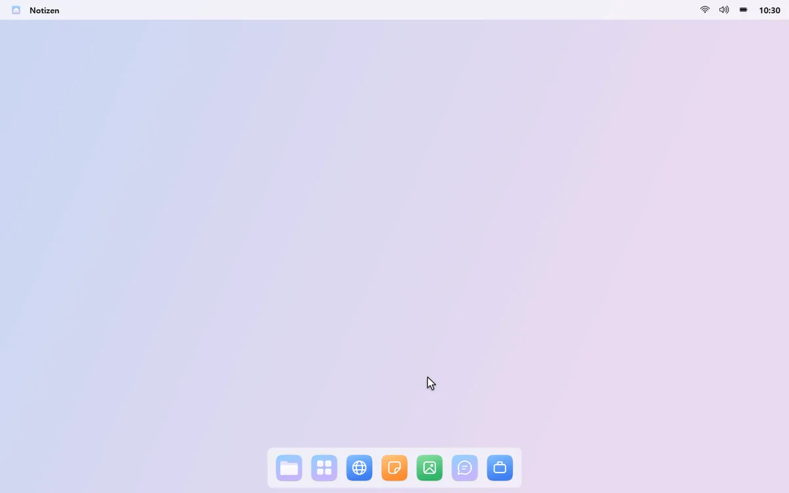
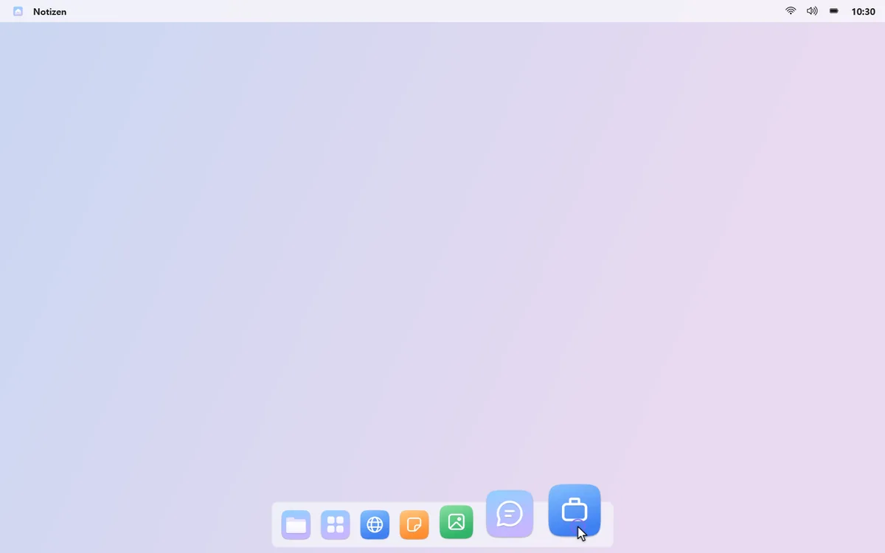
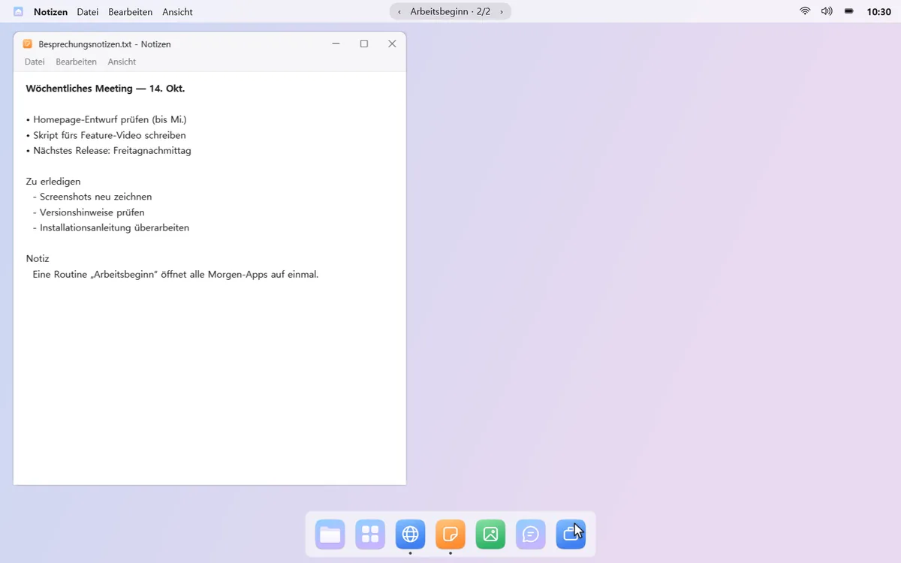
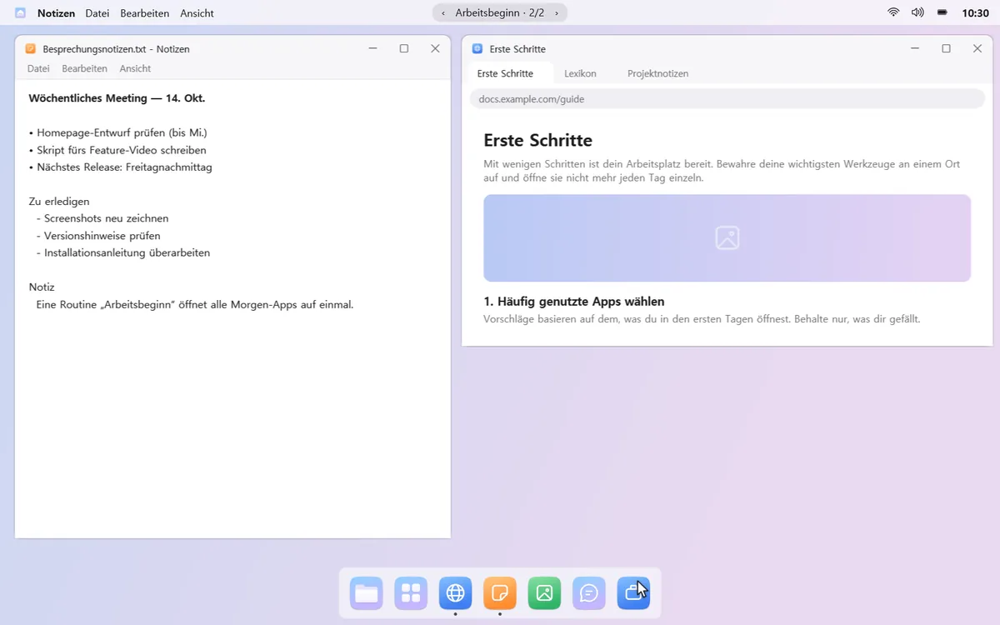
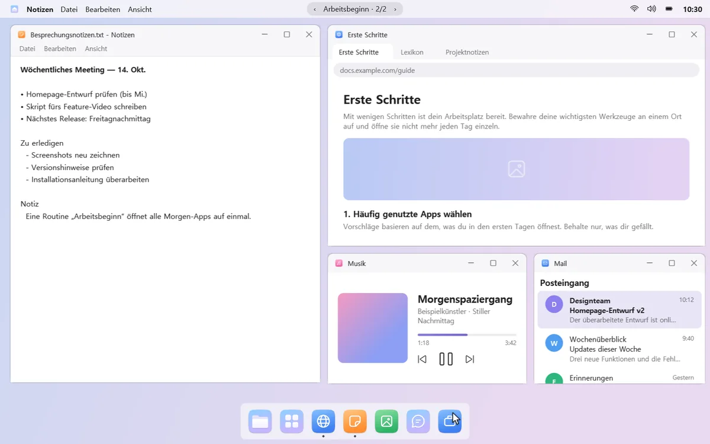
App-Verlauf, Fenstertitel, Routinen und Benachrichtigungen werden nur auf deinem PC verwendet. mongdock liest nie die Adressleiste oder den Verlauf deines Browsers. Nutzungsstatistiken werden nur mit deiner Zustimmung gesendet – und nur als Zahlen.
mongdock blendet die Windows-Taskleiste nur aus, solange es läuft. Pausieren oder beenden – und sie ist wieder da.
„mongdock deinstallieren…“ stellt Taskleiste, automatisches Ausblenden und Benachrichtigungston wieder her und öffnet dann die Windows-Deinstallationsseite.
15 Tage kostenlos